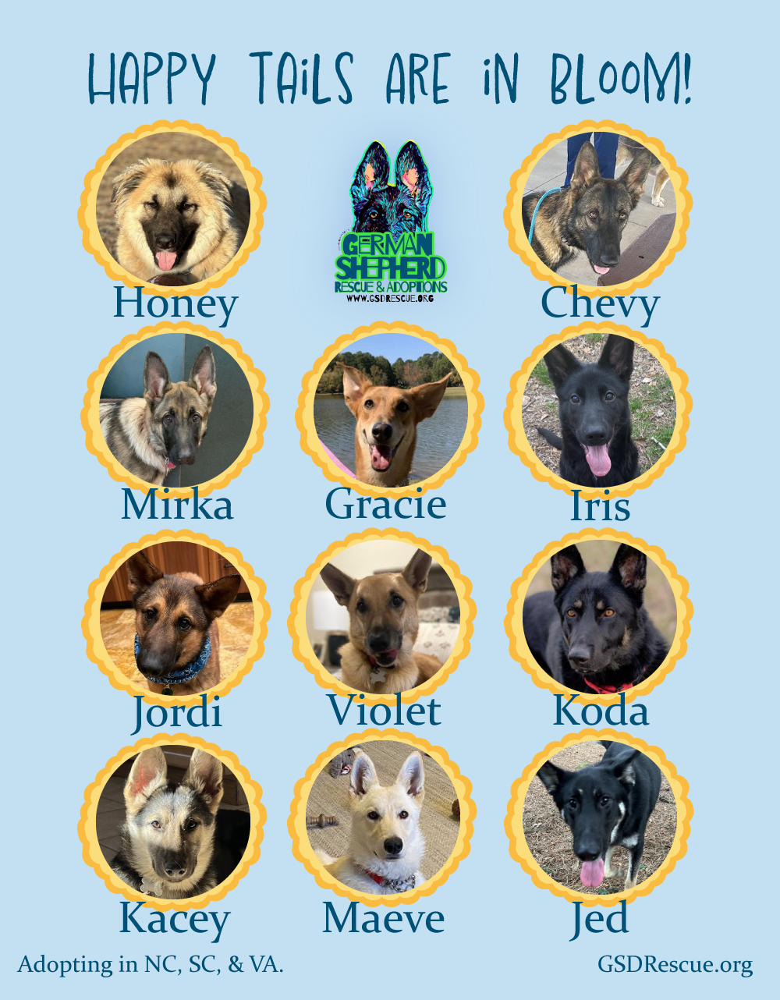
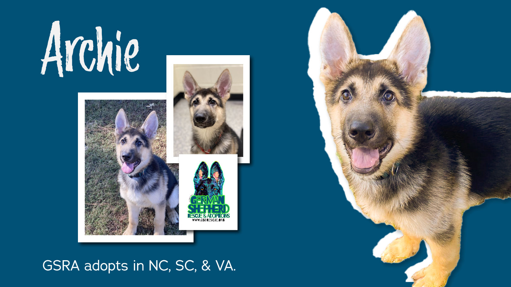
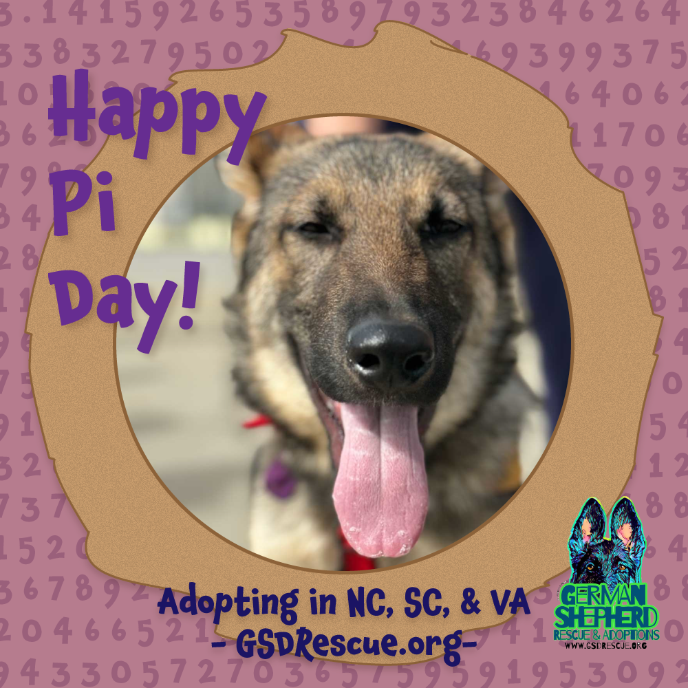
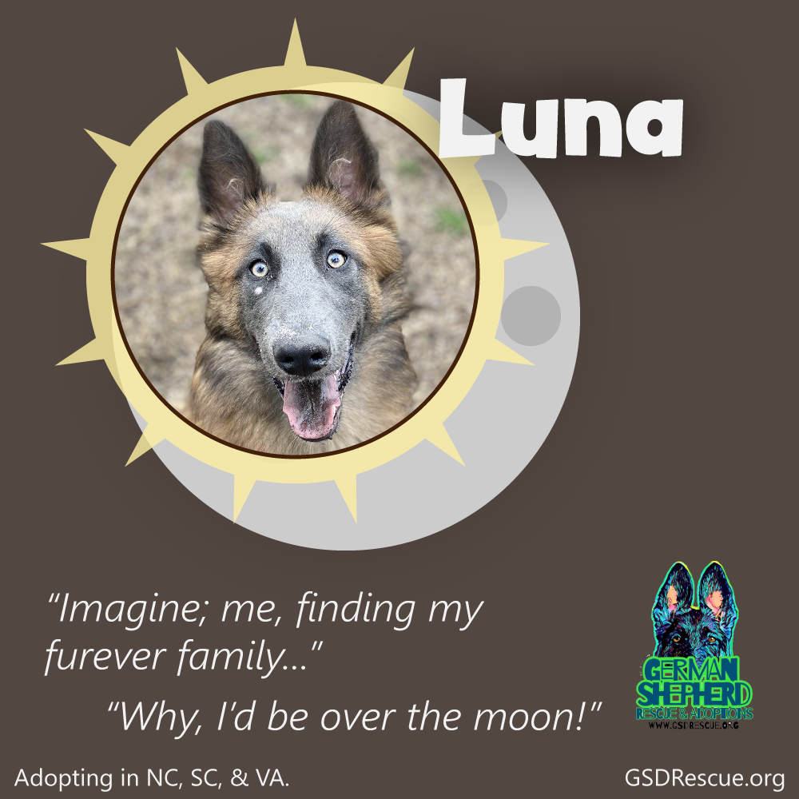
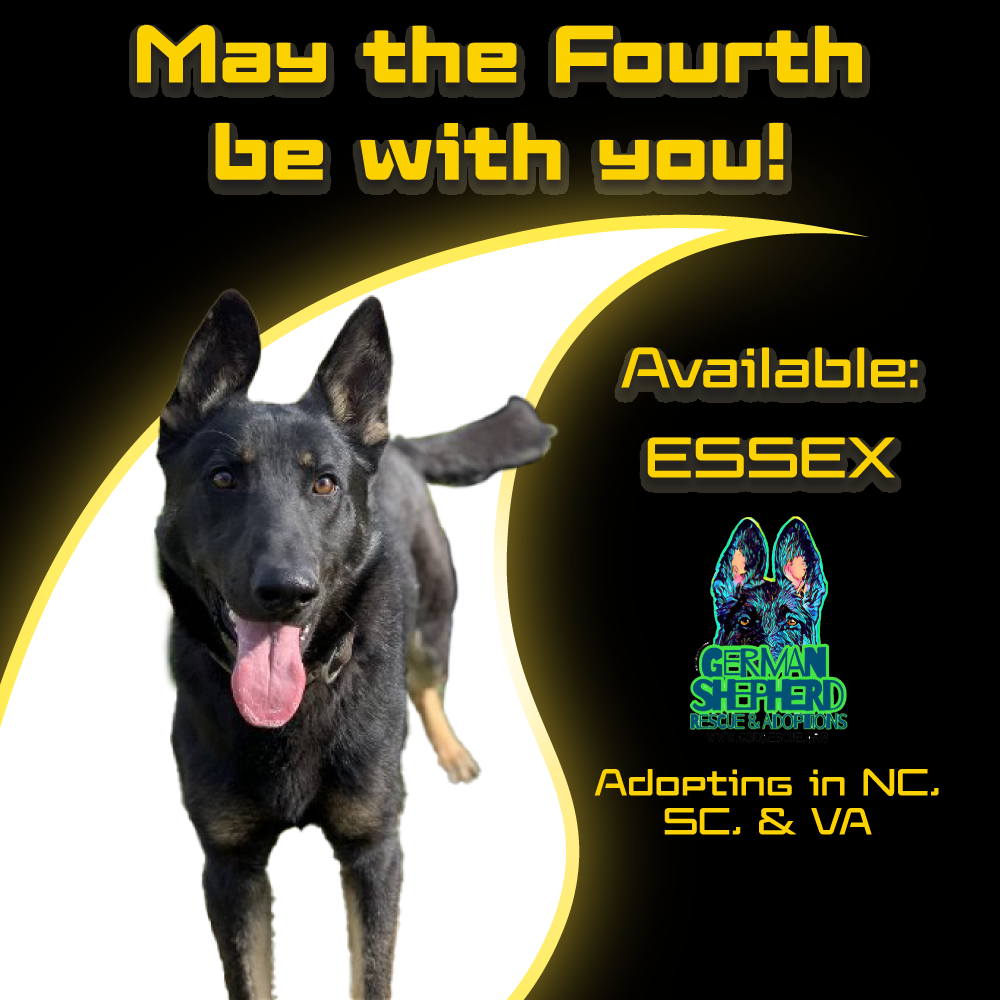
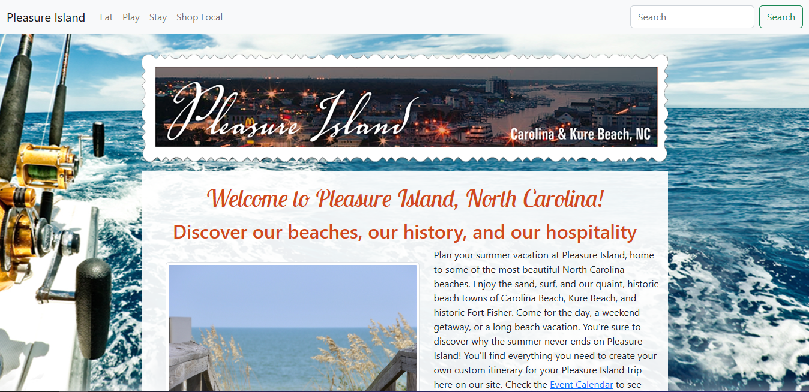
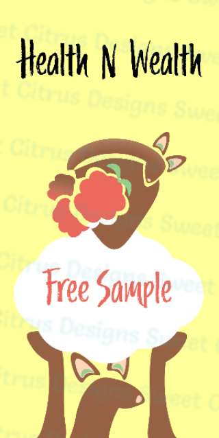
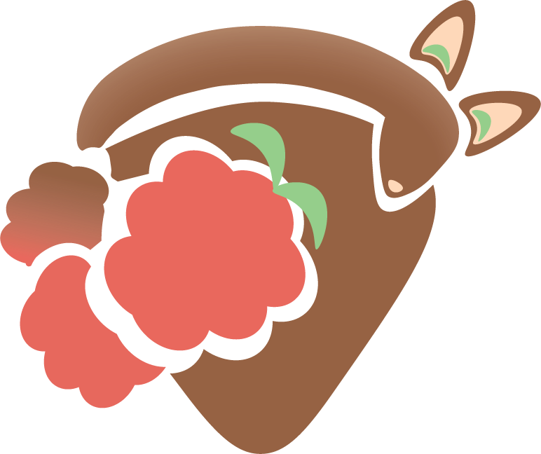
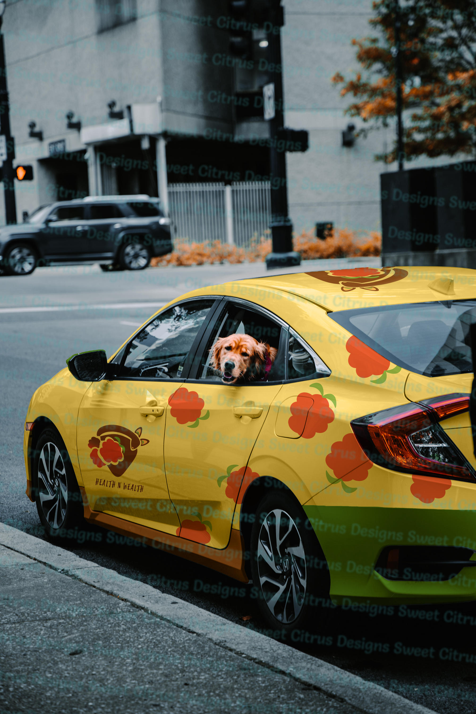
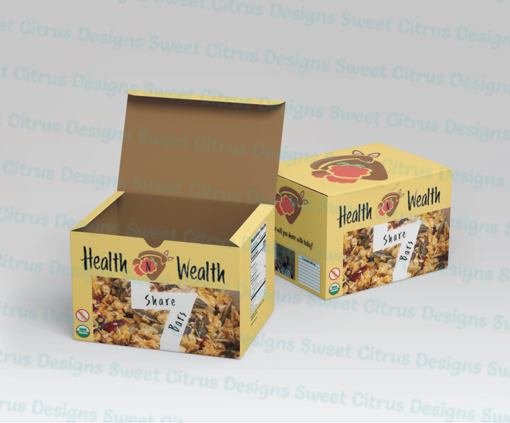

Portfolio
Within the past 5 years, I have worked on an assortment of projects, both for college and for volunteer work. Listed below are some of my projects. Click for more details!
Created to advertise German Shepherd rescue dogs available for adoption using Adobe Illustrator and Krita.
- 60+ posts were made and posted to GSRA's Twitter profile from 2023-2024.
- Campaigns included posts spreading awareness about the rescue's events as well as their dogs.
- Posts about the available dogs highlighted their appearances and personality traits while following seasonal themes and holidays.
- GSRA's Twitter account is no longer available online. If you would like to view more of the posts I've made, I'll be assembling a gallery of them that will be available soon.





A re-imagining of Pleasure Island's old website design. Coded in HTML and CSS, and powered by Bootstrap.
- Created in 2022 as part of a class assignment.
- Was composed of 5 basic pages that utilized some of my front-end web development skills up to that point.
- The redesign was never used officially and was only temporarily viewable for educational purposes only. I do not own any of the branding or imagery related to Pleasure Island; that belongs to their chamber of commerce.
- The archived version of the old Pleasure Island website design is what this project was entirely based off of. Nowadays, Pleasure Island's website looks very modern!

A hypothetical snack bar company that I conceptualized. I created a logo, brand identity, packaging design, and various mockups.
- Created in 2022 as part of a class project.
- Logo and package design brainstorming ideas were hand-sketched on paper.
- At least 4 different branding assets were created using Adobe Illustrator, Animate, and Photoshop.



